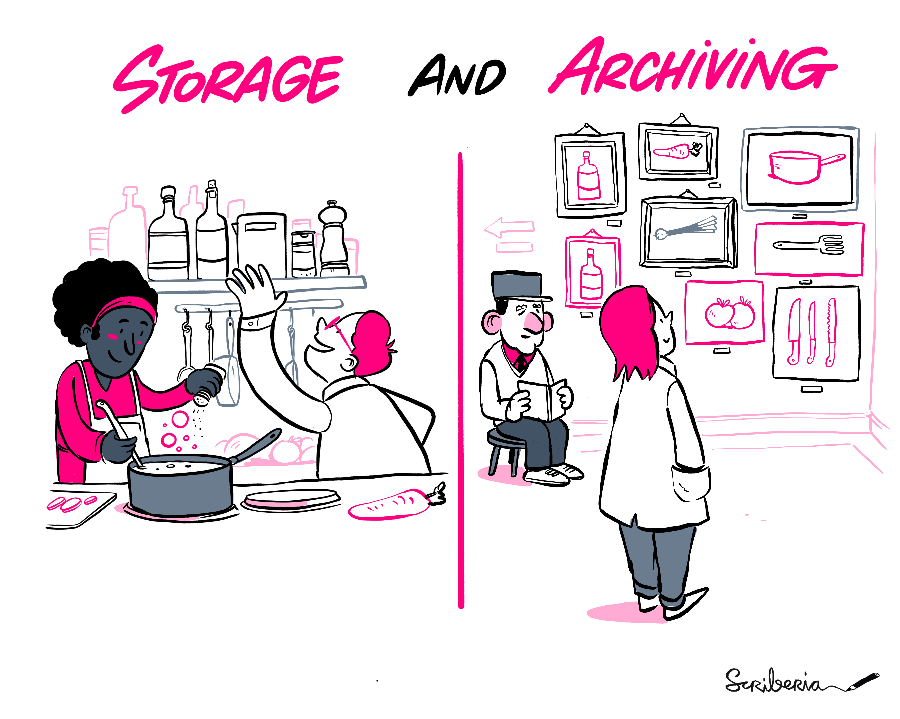
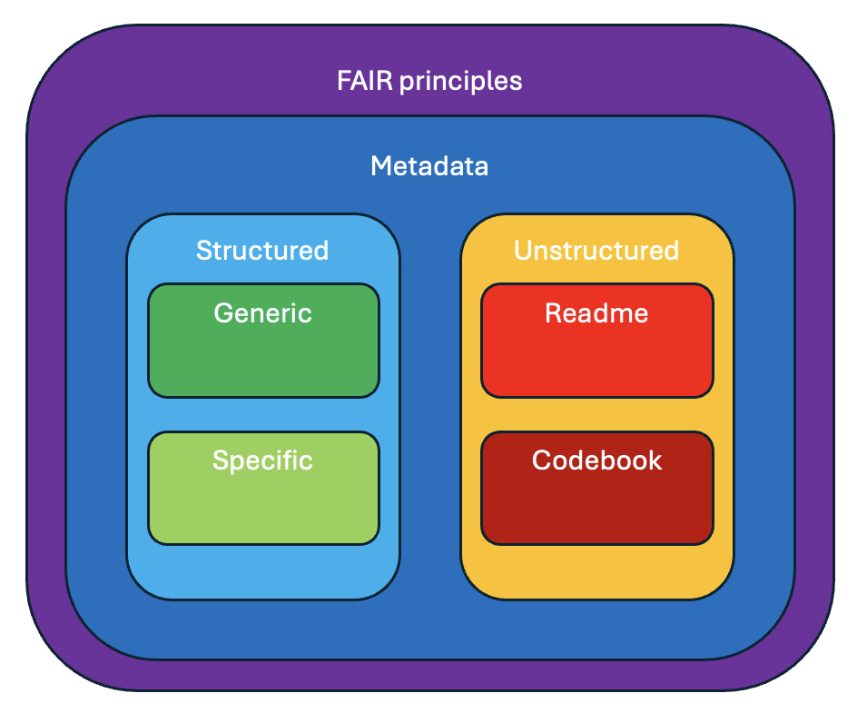
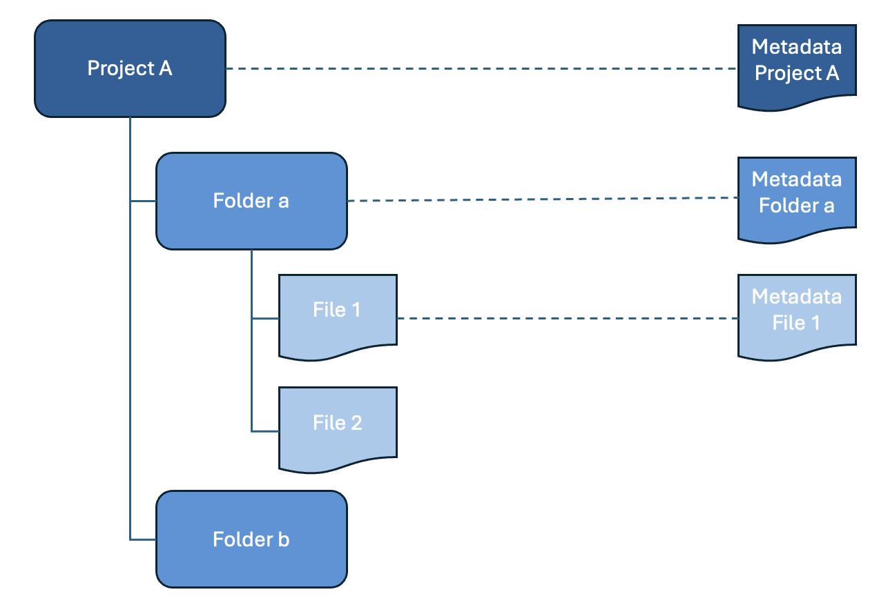

How can you ensure research data is FAIR?
FAIR Principles
This page discusses what the FAIR principles (Wilkinson et al. 2016) are, why they are important and how you can work in line with these principles at VU.
What are the FAIR principles?
The FAIR principles were formulated in 2016 to guide researchers in increasing the Findability, Accessibility, Interoperability and Reusability of their data (see the publication in the journal Scientific Data and the summary of the principles). The goal is to ensure that scholarly data can be used as widely as possible – accelerating scientific discoveries and benefiting society in the process.
A lot of good resources exist already that explain the FAIR principles very well:
- GO FAIR provides a clear overview of the FAIR principles
- The Turing Way has a great information page about FAIR, containing a lot of references to other useful sources
- The story A FAIRy tale explains all principles in an understable way
The FAIR principles were rapidly adopted by Dutch and European funding agencies. If you receive a research grant from NWO, ZonMw, or the European Commission, you will be asked to make your data FAIR.
How can you benefit from working in line with the FAIR principles?
You do not need to apply all FAIR principles at once to start benefiting from making your data FAIR. Applying even just some of the principles will increase the visibility and impact of your data, leading to:
- Increased citations of the datasets themselves and your research
- Improved reproducibility of your research
- Compliance with funder and publisher requirements
Making your data FAIR will also make it possible for you to easily find, access and reuse your own data in the future. You may be the first and most important beneficiary of making your own data FAIR.
Making data FAIR – how to get started in three easy steps?
Start with a data management plan
A DMP is a living document in which you specify what kinds of data you will use in your project, and how you will process, store and archive them. Preparing a data management plan should be your first step in the process to make data FAIR. The DMP template will ask questions that enable you to systematically address the things that need to be done to make your data FAIR. Writing a DMP is also a requirement from funding agencies and some faculties at VU Amsterdam. At VU Amsterdam, you can use DMPonline to create and share DMPs.
Describe and document your data
To be findable, data need to be described with appropriate metadata. Metadata can include keywords, references to related papers, the researchers’ ORCID identifiers, and the codes for the grants that supported the research. You will need to provide such metadata when you are uploading data to a repository (see below). You increase findability by filling out as many metadata fields as possible and by providing rich descriptions in terminology that is common in your field.
To be reusable, data need to be accompanied by documentation describing how the data was created, structured, processed, and so on. It is good practice to integrate writing documentation during the research process. It will be easier and take less time compared to when you try to do this at the end. Having documentation on the research process will also help you to redo parts of your data cleaning actions or data analysis if necessary.
If you have questions about metadata and documentation, contact the RDM Support Desk and we will be happy to help you and to provide advice.
Make your data available through a trustworthy repository
If you choose a repository that: assigns a persistent identifier to both the data and the metadata; attaches metadata to the data according to standard metadata schemas; releases data with a license; and provides access to the data and metadata via an open and standard communication protocol (such as http) – then your data will meet many, if not most, of the FAIR principles.
VU Amsterdam provides three repositories which meets all of these conditions:
- DataverseNL
- Yoda - Yoda information page and Yoda publication platform
- Open Science Framework (OSF)
Costs for using these repositories for datasets up to 500 GB are covered by the faculty. There are costs involved for you department or project if a datasets is larger than 500 GB. See the storage cost model for details.
Storing vs. Archiving Data
There is a difference between storing and archiving data. Storing refers to putting the data in a safe location while the research is ongoing. Because you are still working on the data, the data still change from time to time: they are cleaned, and analysed, and this analysis generates output. As the image below illustrates, storing could be like cooking a dish: you are cleaning and combining ingredients.
Archiving, on the other hand, refers to putting the data in a safe place after the research is finished. The data are in a fixed state, they don’t change anymore. Archiving is done for verification purposes: so others can check that your research is sound. Or: it is done so that others can reuse the resulting dataset. There is also a difference between archiving and publishing, but in essence, archiving and publishing happen at a similar moment and for both, data do not change anymore.

This illustration is created by Scriberia with The Turing Way community. Used under a CC-BY 4.0 licence. DOI: 10.5281/zenodo.3332807
Selecting Data for Archiving
There are various reasons to archive your data: replication, longitudinal research, data being unique or expensive to collect, re-usability and acceleration of research inside or outside your own discipline. It is VU policy to archive your data for (at least) 10 years after the last publication based on the dataset. Part of preparing your dataset for archiving is appraising and selecting your data.
Make a selection before archiving your data
During your research you may accumulate a lot of data, some of which will be eligible for archiving. It is impossible to preserve all data infinitely. Archiving all digital data leads to high costs for storage itself and for maintaining and managing this ever-growing volume of data and their metadata; it may also lead to decline in discoverability (see the website of the Digital Curation Centre). For those reasons, it is crucial that you make a selection.
Remove redundant and sensitive data
Selecting data means making choices about what to keep for the long term, and what data to archive securely and what data to publish openly. This means that you have to decide whether your dataset contains data that need to be removed or separated. Reasons to exclude data from publishing include (but are not limited to):
- data are redundant
- data concern temporary byproducts which are irrelevant for future use
- data contain material that is sensitive, for example personal data in the sense of the GDPR, like consent forms, voice recordings, DNA data; state secrets; data that are sensitive to competition in a commercial sense. These data need to be separated from other data and archived securely
- preserving data for the long term is in breach of contractual arrangements with your consortium partners or other parties involved
In preparing your dataset for archiving, the first step is to determine which parts of your data are sensitive, which can then be separated from the other data. Redundant data can be removed altogether.
Different forms of datasets for different purposes
Once you have separated the sensitive data from the rest of your dataset, you have to think about what to do with these sensitive materials. In some cases they may be destroyed, but you may also opt for archiving multiple datasets. For example, you may want to archive your dataset in more than one form depending on the purpose. For example:
- One for reusability to share
- A second one that contains the sensitive data, and needs to be handled differently.
For the first, the non-sensitive data can be stored in an archive under restricted or open access conditions, so that you can share it and link it to publications. For the second, you need to make a separate selection, so the sensitive part can be stored safely in a secure archive (a so-called offline or dark archive). In the metadata of both archives you can create stable links between the two datasets using persistent identifiers.
What to appraise for archiving
There are several factors that determine what data to select for archiving. For example, whether data are unique, expensive to reproduce, or if your funder requires that you make your data publicly available. This might also help you or your department to think about a standard policy or procedures for what needs to be kept, what is vital for reproducing research or reuse in future research projects.
More information on selecting data:
- Tjalsma, H. & Rombouts, J. (2011). Selection of research data: Guidelines for appraising and selecting research data. Data Archiving and Networked Services (DANS).
- Digital Curation Centre (DCC): Whyte, A. & Wilson, A. (2010). How to appraise and select research data for curation. DCC How-to Guides. Edinburgh: Digital Curation Centre.
- Research Data Netherlands: Data selection.
Data Set Packaging: Which Files should be Part of my Dataset?
A dataset consists of the following documents:
- Raw or cleaned data (if the cleaned data has been archived, the provenance documentation is also required)
- Project documentation
- Codebook or protocol
- Logbook or lab journal (when available, dependent on the discipline)
- Software (& version) needed to open the files when no preferred formats for the data can be provided
See the topic Metadata for more information about documenting your data.
Depending on the research project it may be that more than one dataset is stored in more than one repository. Make sure that each consortium partner that collects data also stores all necessary data that is required for transparency and verification. A Consortium Agreement and Data Management Plan will include information on who is responsible for archiving the data.
Persistent Identifier
A Persistent Identifier (PID) is a durable reference to a digital dataset, document, website or other object. In the context of research data and software, it is essentially a URL that will never break. By using a Persistent Identifier, you make sure that your dataset will be findable well into the future when it is registered online (for example at DataCite. Another advantage is that it makes a digital object citable.
Multiple PID systems
There are multiple PID systems, each with its own particular properties. Examples of widely used PIDs in the research domain include the following.
- DOI: A Digital Object Identifier can be used to refer to research data, research software and publications.
- ORCiD: An Open Researcher and Contributor ID is used to create a researcher profile with a unique identification number.
- ROR: The Research Organization Registry is a global register with persistent identifiers for research institutes.
See the Persistent Identifier guide of Netwerk Digitaal Erfgoed for a more elaborate overview. Apart from widely used domain-agnostic PIDs, there is a wide range of domain-specific unique identifiers that can be used. If you are interested in domain-specific identifiers, it is useful to ask colleagues in your department or discipline.
Persistent Identifiers for data and software in repositories
Persistent Identifiers can be assigned to datasets and software upon their deposit in a repository. In many repositories, this is a DOI. Data repositories are entitled to generate Persistent Identifiers for data and software. This is one of the reasons why archiving and publishing data and software has to be done in a repository. After the process of uploading data or software to a repository, a Persistent Identifier will be generated. Upon publishing the data or software, the DOI is registered online (usually at DataCite when it concerns a dataset).
Some repositories enable their users to reserve a Persistent Identifier before the publishing process has finished, so that you can include the Persistent Identifier in a publication before the data will be actually published, or to include the Persistent Identifier in a readme file. This is for example possible in Zenodo.
The repositories offered by VU Amsterdam, Yoda and DataverseNL provide DOIs for deposited datasets and software.
Creating and using an ORCiD
Researchers can use an ORCiD to identify their research output as their work. You can request an ORCiD yourself. Instructions for setting up an ORCiD and connecting it to your VU research profile in PURE are available in this ORCiD LibGuide. An ORCiD is often asked for when you submit a publication or upload data or software to a repository. You can use your ORCiD record to create a research profile as well.
Using a ROR
Researchers can use the ROR for VU Amsterdam when filling metadata forms for their research output to show that their work has been created within their employment at VU Amsterdam.
Data Documentation
By creating documentation about your research data you can make it easier for yourself or for others to manage, find, assess and use your data. The process of documenting means to describe your data and the methods by which they were collected, processed and analysed. The documentation or descriptions are also referred to as metadata, i.e. data about data. These metadata can take various forms and can describe data on different levels.
An example that is frequently used to illustrate the importance of metadata is the use of the label on a can of soup. The label tells you what kind of soup the can contains, what ingredients are used, who made it, when it expires and how you should prepare the soup for consumption.
When you are documenting data, you should take into account that there are different kinds of metadata and that these metadata are governed by various standards. These include, but are not limited to:
- FAIR data principles: a set of principles to make data Findable, Accessible, Interoperable and Reusable.
- Guidelines for unstructured metadata: mostly research domain-specific guidelines on how to create READMEs or Codebooks to describe data.
- Standards for structured metadata: generic or research domain-specific standards to describe data.
The CESSDA has made very detailed guidance available for creating documentation and metadata for your data.

FAIR data principles
The FAIR data principles provide guidelines to improve the Findability, Accessibility, Interoperability, and Reuse of digital assets. The principles emphasise machine-actionability, i.e., the capacity of computational systems to find, access, interoperate, and reuse data with none or minimal human intervention.
More information can be found in the section about the FAIR data principles.
Unstructured metadata
Most data documentation is an example of unstructured metadata. Unstructured metadata are mainly intended to provide more detailed information about the data and is primarily readable for humans. The type of research and the nature of the data influence what kind of unstructured metadata is necessary. Unstructured metadata are attached to the data in a file. The format of the file is chosen by the researcher. More explanation about structured metadata can be found on the metadata page.
README
A README file provides information about data and is intended to ensure that data can be correctly interpreted, by yourself or by others. A README file is required whenever you are archiving or publishing data.
Example of READMEs
Codebook
A Codebook is another way to describe the contents, structure and layout of the data. A well documented codebook is intended to be complete and self-explanatory and contains information about each variable in a data file. A codebook must be submitted along with the data.
There are several guides for creating a codebook available:
Metadata
Metadata provide information about your data. Structured metadata are intended to provide this information in a standardised way. The structured metadata are readable for both humans and machines. It can be used by data catalogues, for example DataCite Commons.
The standardisation of metadata involves the following aspects:
- Elements: rules about the fields that must be used to describe an object, for example the
title,authorandpublicationDate. - Values: rules about the values that must be used within specific elements. Controlled vocabularies, classifications and Persistent Identifiers are used to reduce ambiguity and ensure consistency, for example by using a term from a controlled vocabulary like the Medical Subject HEadings (MeSH) as a
subjectand an Persistent Identifier such as an ORCID to identify aperson. - Formats: rules about the formats used to exchange metadata, for example JSON or XML.
Metadata standards
Metadata standards allow for easier exchange of metadata and harvesting of the metadata by search engines. Many certified archives use a metadata standard for the descriptions. If you choose a data repository or registry, you should find out which metadata standard they use. At VU Amsterdam the following standards are used:
- Yoda uses the DataCite metadata standard
- DataverseNL uses the Dublin Core metadata standard
- VU Amsterdam Research Information System PURE uses the CERIF metadata standard
Many archives implement or make use of specific metadata standards. The UK Digital Curation Centre (DCC) provides an overview of metadata standards for different disciplines. The list is a great and useful resource in establishing and carrying out your research methodology.
Controlled Vocabularies & Classifications
Controlled vocabularies are lists of terms created by domain experts to refer to a specific phenomenon or event. Controlled vocabularies are intended to reduce ambiguity that is inherent in normal human languages where the same concept can be given different names and to ensure consistency. Controlled vocabularies are used in subject indexing schemes, subject headings, thesauri, taxonomies and other knowledge organisation systems. Some vocabularies are very internationally accepted and standardised and may even become an ISO standard or a regional standard/classification. Controlled vocabularies can be broad in scope or very limited to a specific field. When a Data Management Plan template includes a question on the used ontology (if any), what is usually meant is: is there a specific vocabulary or classification system used? The National Bioinformatics Infrastructure Sweden gives some more explanation about controlled vocabularies and ontologies. In short, an ontology does not only describe terms, but also indicates relationships between these terms.
Examples of controlled vocabularies are:
- CDWA (Categories for the Description of Works of Art)
- Getty Thesaurus of Geographic names
- NUTS (Nomenclature of territorial units for statistics)
- Medical Subject HEadings (MeSH)
- The Environment Ontology (EnvO)
Many examples of vocabularies and classification systems can be found at the FAIRsharing.org website. It has a large list for multiple disciplines. If you are working on new concepts or new ideas and are using or creating your own ontology/terminology, be sure to include them as part of the metadata documentation in your dataset (for example as part of your codebook).
Metadata levels
Finally a distinction can be made on the level of description. Metadata can be about the data as a whole or about part of the data. It can depend on the research domain and the tools that are used on how many levels the data can be described. In repositories like Yoda and DataverseNL it is common practice to only create structured metadata on the level of the data as a whole. The Consortium of European Social Science Data Archives (CESSDA) explains this distinction for several types of data in their Data Management Expert Guide.

Dataset registration
When you want to make sure that your dataset is findable it is recommended that the elements of the description of your dataset are made according to a certain metadata standard that allows for easier exchange of metadata and harvesting of the metadata by search engines. Many certified archives use a metadata standard for the descriptions. If you choose a data repository or registry, you should find out which metadata standard they use. At VU Amsterdam the following standards are used:
- DataverseNL and DANS use the Dublin Core metadata standard
- VU Amsterdam Research Portal PURE uses the CERIF metadata standard
Many archives implement or make use of specific metadata standards. The UK Digital Curation Centre (DCC) provides an overview of metadata standards for different disciplines. The list is a great and useful resource in establishing and carrying out your research methodology. Go to the overview of metadata standards. More important tips are available at Dataset & Publication.
Data Licensing
Introduction
A data licence agreement is a legal instrument that lets others know what they can and cannot do with a particular dataset (and any documentation, scripts and metadata that are published with the data - information about software licensing can be found on the software licensing page). It is important to consider what kind of limitations are relevant. Usually, at least the following questions are considered:
- Can people make copies or even distribute copies?
- Do others (and you) reusing the dataset need to acknowledge you as the author of the original dataset? (This is called Attribution.)
- Do others (and you) who reuse the dataset and/or make derivatives of the dataset need to share their work under a similar licence? (This is called Share-Alike.)
- Can others (and you) use your dataset commercially? (A restriction on commercial use is called Non-Commercial.)
- Can others (and you) create a new work based on the dataset? (This is called a Derivative.)
The considerations above are the ‘building blocks’ that Creative Commons licences use. There are also other considerations, and also other licences.

Reusing existing data
If you wish to reuse data collected by others (this could be data you received from for example Statistics Netherlands or from a company, a dataset you have found in an online repository, commonly used databases for which VU Amsterdam has a licence, etc.), make sure that you read the licence or terms of use. Also make sure that you work with the data according to the licence or terms of use. This can mean different things depending on the licence, but common things to consider are for example:
- cite the data in an appropriate manner;
- do not share the data beyond the project/purpose for which you received them;
- share the outcome of your research based on the data under a similar licence;
- only use them for scientific purposes (and not for commercial purposes, for example).
If you have questions about the legal context of using an existing dataset, you can contact the RDM Support Desk or the legal experts at IXA VU.
Licensing data
If you want to make your data available for other (research) purposes, it is important to apply a licence to it. Without a licence, it is impossible for others to reuse your data without your explicit approval. When you deposit your data in a repository, the repository will usually ask you to select a standard licence, or to create and add a custom licence yourself. If you need help with drawing up licence agreements, you can contact the VU’s legal office.
DataverseNL
In DataverseNL you can choose your terms of use when uploading data to the repository. The DataverseNL user guide explains how licensing works in the repository.
Yoda
If you publish your data in Yoda, there is guidance available on how to choose a licence and how to customise licences.
Open Science Framework (OSF)
In OSF, you can apply a standard licence to your materials or upload your own custom licence. The OSF user guide explains both options.
External repositories
Some data repositories require you to use a certain licence if you want to deposit your data with them. At Dryad, for example, all datasets are published under the terms of Creative Commons Zero to minimise legal barriers and to maximise the impact for research and education. Some funders may also require that you publish the data as open data. Open data are data that can be freely used, re-used and redistributed by anyone - subject only, at most, to the requirement to attribute and share alike (Open Knowledge International definition).
Additional websites and tools:
- Explanation about copyrights and licences by a professor from Leiden University (English subtitles available)
- The Guide to Creative Commons for Scholarly Publishing and Educational Resources by NWO, VSNU and the University and Royal Libraries
- DCC how-to guide on licensing research data, a guide that links to the Creative Commons website, where many terms are explained
- Open Data Commons Public Domain Dedication and License (PDDL)
- EUDAT B2SHARE licence selection wizard, which Pawel Kamocki (et al.) released under an open source licence.1
References
Footnotes
For the source code, see https://github.com/ufal/public-license-selector/↩︎